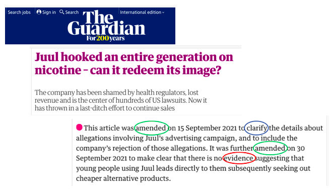
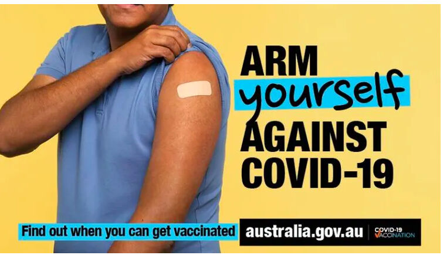
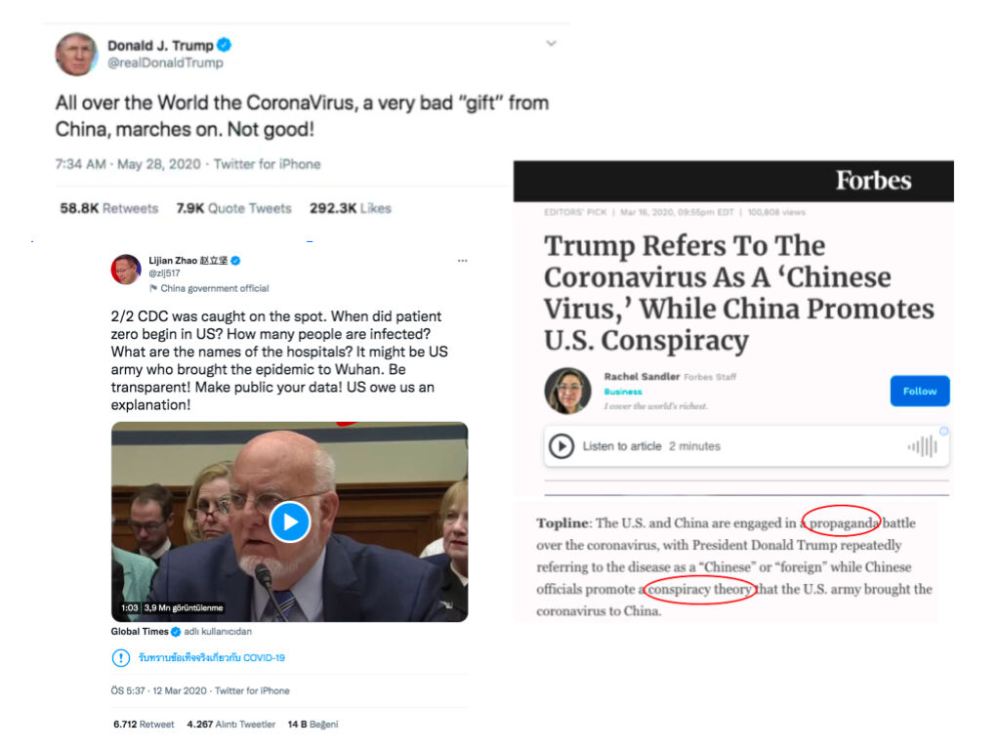
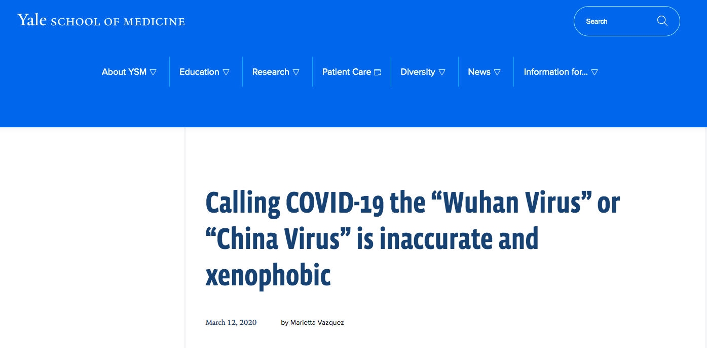

Trainees Edition
Trainers Edition
Trainees Edition
Trainers Edition
Module 12: Distinguishing News from Other Media Content
Module Description
The main purpose of this module is to introduce learners how to distinguish news from other media content. A secondary aim is to guide trainers using the content of this module to educate their learners.
In accordance with these goals, definitions of news and other media content, such as advertising, promotion, publicity, propaganda, raw information, and entertainment are covered. The main characteristics of news which are critical for distinguishing news from other content, “universal news drivers” will be explained using relevant examples. Guidelines on how to teach this subject are covered in this module.
Learners who successfully complete this module will be able to:
- Identify what news is, and what its main characteristics are (verification, independence, and accountability)
- Identify other media content and distinguish these media from news.
Trainers who successfully complete this module, will be able to demonstrate an understanding of the guidelines for teaching the subject.
Module Structure
This module consists of the following parts:
- Module Description (objectives, description of the content, and learning outcomes)
- Module Structure
- Guidelines for Trainees
- Guidelines for Trainers (preparation, methods, and tips)
- Content (study materials and exercises)
- Quiz
- Resources (references and recommended sources)
The main objectives of this module, and the description of the content and learning outcomes are explained in the Module Description section. Content includes all study materials and content-related exercises. The quiz provides multiple choice questions for trainees to test their progress.Resources have two components: references, and recommended resources for further study. References is the list of resources cited in the content section; recommended resources consist of a list of supplemental resources, which are recommended reading. Guidelines for Trainees includes instructions and suggestions for learners. Guidelines for Trainers leads trainers through different phases of the training, and provides useful tips to be used when teaching the subject.
Guidelines for Trainees
Learners are expected to read the text, and do the exercises. They may consult recommended resources for further information. After completing study of the content, learners are strongly advised to take the quiz to evaluate their progress.
Guidelines for Trainers
Guidelines for Trainers includes suggestions and tips for trainers on how to use the content of this module to train learners about sources for reliable information. Trainers can revise the study material if needed.
Preparation
Preparing a presentation (PowerPoint/Prezi/Canva) which is supported by visual materials is strongly suggested. It is also suggested that the examples used, and the exercises recommended should be those which are most familiar to the target group. Use of local or well-known issues help to maintain the attention of learners.
Getting Started
A short quiz (3 to 5 questions) in Kahoot or Mentimeter can be used at the beginning for engaging participants in the topic. The quiz can also be used as a motivational tool, as well as a tool to check trainees’ existing knowledge on the subject. Some examples for questions might be:
- What is news?
- What is the difference between promotion and news?
- How might one distinguish between news and entertainment?
- What does accountability mean?
Methods to Use
Various teaching methods can be used in combination with each other during the training. Methods such as:
- Lecturing
- Group work
- Individual work
- Self reflection
Tips for Trainers
Warming-up
An effective way of involving participants and their learning expectations is to ask a few preliminary questions about how news is distinguished from other media content. For instance, learners might be asked: Can you give an example of potential differences in media content? The warm-up activity may contain the following elements:
- prepare different examples of media content (e.g. news, advertisement, entertainment)
- ask participants whether their example is news, or not
- ask participants to share and explain their answers, and how they came to their conclusion
After the activity, make sure that participants understand that there are differences in media content.
Presenting the Objective of the Lesson
The objective of the lesson should be made clear. Following the warm-up questions, it will be easier to clarify the objectives.
Presenting the Lesson Content
While presenting the content, make sure to interact with the learners, and encourage them to participate actively.
Before:
- Before the lesson, prepare examples of different media content.
During:
- At the beginning of the lesson ask participants some questions such as:
- What do they know about news and other media content?
- What is news?
- How might one distinguish news from other media content, such as raw information, promotion?
- What might be the consequences of accepting media content other than news, as news?
- What is the most appropriate way to distinguish news from other media content?
- While introducing the module contents:
- Ask participants to give examples of different media content.
- Make comments on their examples.
Afterwards:
- Make sure participants understand that here is a variety of media content.
- Review and elaborate on the importance of distinguishing news from other media content.
- Ask participants to provide their own examples of what is, or is not news. Ask them to support their choice using the module contents.
Suggestions:
- Be sure to support your lessons with local, or well-known examples and exercises.
- When you choose examples, make sure that they fit well with the definition of the media content.
Conclusion
Give a short summary, and ask questions which would help underline the most important content and practises of the lesson.
Content: Distinguishing News From Other Media Content
Introduction
To recognize or distinguish news from other media content is very important, but not easy all of the time. Media is anything that acts as a channel for information. It can be anything which transmits information from one person or place to another (Checkology Glossary, 2021).
Information which is conveyed via different media types should be “reliable”. Reliable information has three main characteristics: Verification, Independence and Accountability (Digital Resource Center, 2021). Hornik, Anzalone & Spikes (2018, p. 192) use “information neighborhoods” as a news literacy concept, which is designed to help distinguish among different types of information: Journalism, Entertainment, Advertising, Promotion, Propaganda and Raw Information (see Table 1). The News, or Journalism neighborhood is the only one which has Verification, Independence and Accountability. News should pass through a journalistic process, which includes VIA. Most other media content does not have these three main characteristics; and therefore, sometimes, lines between differing media content may be blurred.
Definition of terms (Hornik et al., 2018):
- Verification is a process which establishes or confirms the accuracy or validity of journalistic reporting.
- Independence is freedom from influence or support by outside parties.
- Accountability is taking responsibility, by name, for the truthfulness and reliability of a news report.
Table 1: Information Neighborhood

This module will help learners to identify and explain the characteristics of news versus other media content.
News
News is “timely information of some public interest that is shared and subject to a journalistic process of verification and for which an independent individual or organisation is directly accountable” (Hornik et al., 2018, p. 193). News should inform the audience through fair and impartial reporting, and should be unbiased by the personal opinions of the author. Sometimes the line between news and opinions about that news, or between news and other media content, can be blurred. Only news has the necessary characteristics of verification, independence and accountability (VIA).
Journalism requires a conscientious attempt to gather and report information as accurately as possible, to examine and verify information. Verification has long been the essential standard of journalism. It uses strict criteria to ensure that the information included in the stories is as humanly accurate as possible, underlining the importance of delaying the publication of unchecked information. Truth remains the primary purpose of journalism, whether through traditional reporting, citizen journalism, or hybrid combinations. Because if the information on which the news is based (and the citizens' judgments are formed) is unreliable, suspicious or even completely wrong, there can be no conscious citizenship (Perloff, 2020, p. 58).
It is also extremely important to be independent from governments and all other power elements while preparing news content. Journalistic activities should be conducted completely independently of any funder or government agency (Pickard, 2020, p. 169). Various sources confirm that creating a public media ecosystem is useful in promoting diversity and independence in news, as well as fostering political knowledge and democratic participation. Also, public media systems are driven by a normative commitment to ensure that all members of society have access to information and communication systems (Pickard, 2020, p. 166).
In a democracy, media organisations and their journalists are accountable in various ways to their audiences and to society. For example, if they slander someone or show contempt of court, they are liable under the law. In ethical matters, the press has several self-regulatory mechanisms that hold editors accountable through its ability to ensure the publication of critical decisions. Media organisations emphasise that they are also held accountable by their audiences (and advertisers). Readers, viewers, or listeners can be lost in the event of a particular behaviour or a negative public reaction to content (Franklin, Hamer, Hanna, Kinsey & Richardson, 2005, p. 3-4). Journalistic activities, unlike other types of information, require journalists to strive to be independent. For example, a public relations professional working for an organisation is unlikely to share information that could make the organisation look bad. A journalist, on the other hand, will try to present a complete, if not entirely positive, picture (Potter, 2006, p. 9).
Example of Accountability:
In this news article The Guardian further amends a previous article, which it had already amended twice before, in the pursuit of journalistic accuracy and integrity, by citing several instances of incomplete research and reporting.

Source: The Guardian
Example of Accountability and Verification:
In a more far ranging mea culpa The New York Times Editorial Board cited multiple shortcomings in its initial reporting on the invasion of Iraq by the United States. Inaccurate, incomplete and unverified news content was acknowledged, and retracted.

Source: The New York Times
There are three factors which determine what becomes news (Digital Resource Center, 2021):
- Universal News Drivers
- Editorial Judgement
- Audience Judgement
Universal News Drivers
In order to determine whether information is news or not there are some factors which are called news values or Universal News Drivers (Digital Resource Center, 2021; Hornik et al., 2018, p. 194):
- Importance: Certain information is crucial for the public to know. Especially when that information has serious implications for the general public, such as a pandemic, or an economic crisis.
- Prominence: When a story is news because of the people involved. Especially if a story is related to an important public figure such as a politician.
- Human Interest: A unique or universal experience exploring the human condition.
- Conflict: A disagreement among people, institutions or ideas. Whether it is a trivial or important disagreement, conflict is always a major news driver.
- Change: Progress or setbacks in areas such as law or science which may significantly alter social settings or interaction.
- Proximity: Local events whose proximity to the audience increases their news value.
- Timeliness: Anniversaries, holidays or deadlines which impact the public.
- Magnitude: Stories driven by unusually large or small numbers of people involved in an incident.
- Relevance: How wide is the story’s impact? These types of stories often contain helpful and relevant information for the news audience.
- Unusualness: When something is different, rare, or unique grabs the attention of the news audience, such as a “man bites dog” story.
Editorial Judgement
Editorial judgement is a process by which editors of a news outlet determine which of the many stories available each day will be featured, and how and where they will be presented (Digital Resource Center, 2021).
Editors must take into account the tone (humorous, serious, or scholarly, for example) and weight (length of the article, and its positioning in the format).
Audience Judgement
Taking into account audience judgement and preferences plays a large role in determining the editorial choices made in the presentation of news (Digital Resource Center, 2021).
Promotion
Promotion includes Advertising, Publicity and Propaganda. The purpose of promotion is to persuade people by manipulating the presentation of the information in order to influence their opinion of that information. The goal is to create interest and positive thinking about a person, event, product, or idea.
Advertising
Advertising is information which openly and directly attempts to attract attention to the ad purchaser’s product in order to sell to potential buyers a product or service (Hornik et al., 2018, p. 184). Its goal is to create a commercial transaction between a seller and a consumer.
Example of Advertising:
In this television commercial Volkswagen (VW) hopes to attract new customers to its advertised “Clean Diesel” automobile by conflating “old wives dirty talk” with a former “dirty diesel” VW vehicle now replaced by a “clean diesel” VW vehicle.
Source: YouTube Search
An example of how the above cited advertisement may be considered unreliable (and in this case intentionally misleading) information is revealed below in both a news release by the Federal Trade Commision (USA), and the Environmental Protection Agency (USA) charging Volkswagen with intentionally deceiving customers.

Source: Federal Trade Commision

Source: Environmental Protection Agency
Publicity
Publicity is the act of attempting to secure public attention for a product, person or group of people, or an event with information designed to enhance the image of that person or product (Hornik et al., 2018 p. 196).
An example of publicity created by the Australian Government for its anti-covid vaccination campaign:

Propaganda
Propaganda is provocative information spread widely in order to influence opinion about larger social entities such as political movements, ethnic groups, or entire nations, in order to help or harm the targeted entity. The information is necessarily biassed and misleading, in order to promote a point of view or ideological agenda (Digital Resource Center, 2021; Hornik et al., 2018, p. 196).
The tweets below demonstrate how propaganda may be used by two opposing sides against each other. They include all keywords of a propaganda: help/harm, deliberately, widely spread, biassed, misleading, or ideological.

Source: Forbes
The article below examines the use of inaccurate information used to promote a biassed point of view:

Source: Yale School of Medicine
Entertainment
Entertainment, in the context of News Literacy, is also a constituent of the Information Neighborhood, which contains media that create pleasure or diversion (Hornik et al., 2018, p. 189). Entertainment makes use of “creative licence” which allows the producer to make claims and use ideas which are not necessarily verifiable, even when the content produced purports to be “based on a true story”.
The television advertisement below combines entertainment with publicity and promotion. A grandmother (who is inherently trustworthy because she is grandmother and who doubles as a stunt driver) convinces a would-be buyer of her car that she has taken the best possible care of it (when she has in reality driven the heck out of it). This commercial is also an excellent example of “blurred lines”.
Source: YouTube
Raw Information
Raw information is content which has not been analysed, checked, edited, explained or placed in any context (Checkology Glossary, 2021). Raw Information is often uploaded by anonymous producers, so accountability, and verifiability is usually impossible (Hornik et al., 2018, p. 66).
Journalists verify raw information about an incident, remove complexities, create context, and report them. However, doing so is not always easy, even for journalists. Therefore, it is important that we understand whether the information we encounter is raw, in other words, whether it is appropriately prepared for news consumers or information users.
For example, a short video shared online in January 2019 and shot near the Lincoln Memorial in Washington, D.C. showed a high school student from Kentucky and a Native American activist directly facing off. The first comment made claimed that other students treated the activist in disrespectful, even racist ways. On top of that, even the organisers of the event that brought the students to Washington, D.C. apologised for the disgraceful behaviour shown in the video with a tweet (which was later deleted). However, this initial comment was unfortunately incomplete, so the information that was disseminated was raw. Indeed, later on, as videos of others, eyewitnesses, and interviews with witnesses emerged, the picture began to be seen more broadly, and it turned out that the raw information in the circulation was not the truth (News Literacy Project, 2021).
Blurred Lines
Blurred lines use the characteristics of a credible source of information in order to deceive an audience into believing something which looks like real journalism, but which is in reality not VIA. A good example of this is sponsored content.
The article below is an example of sponsored content which was published in the New York Times.

Source: The New York Times
Exercise
- Find a news article and one other form of media content such as promotion on a news website. How does the news website indicate which articles are news/journalism, and which articles represent other forms of media content such as sponsored content? Do you believe the news website makes a clear distinction between news/journalism and other media content?
- Find a news article and decide which news driver motivated it?
- Find two different news articles on the same topic in different newspapers, and compare articles using VIA.
Quiz
References
Checkology Glossary. (2021). Retrieved from https://checkology.org/everyone/word-wall
Digital Resource Center. (2021). Retrieved from https://digitalresource.center/content/definitions-news
Franklin, B., Hamer, M., Hanna, M., Kinsey, M. & Richardson, J.E. (2005). Key Concepts in Journalism Studies. London: Sage
Hornik, R., Anzalone, J. & Spikes, M. (2018). GetNewsSmart: A Guide to Understanding the Key Concepts of News Literacy. New York: The Center for News Literacy.
News Literacy Project. (2021). New Lit Tips: Raw Information Needs Context for Healthy Consumption. Retrieved from https://newslit.org/tips-tools/raw-information-needs-context/
Perloff, R.M. (2020). The Dynamics of News: Journalism in the 21st-Century Media Milieu. New York: Taylor & Francis.
Pickard, V. (2020). Democracy Without Journalism? Confronting the Misinformation Society. New York: Oxford University Press.
Potter, D. (2006). Handbook of Independent Journalism. Washington, DC: Bureau of International Information Programs, U.S. Department of State.
Recommended Sources
American Press Institute (2021). Journalism Essentials. Retrieved from https://www.americanpressinstitute.org/journalism-essentials/
Hobbs, R. (2020). Mind Over Media: Propaganda Education for a Digital Age. New York: W.W. Norton & Company.
Recommended Videos
Native Advertising: Last Week Tonight with John Oliver (HBO) (2014, Aug 4). John Oliver's discussion of native advertising on YouTube.